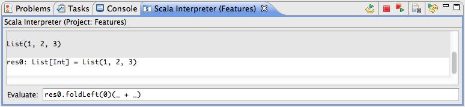
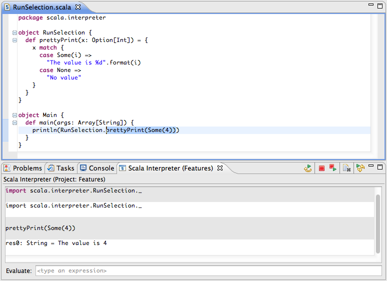
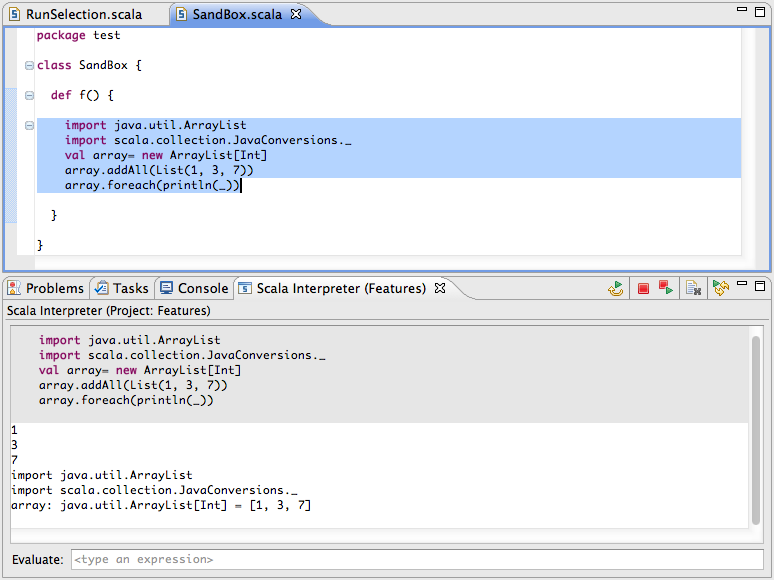

Scala IDE integrate the Scala REPL. It is set in a view called Scala Interpreter.
Each view instance is associated to a project, and all artifacts defined or referenced in the project are available to the interpreter.
There are multiple ways to start it:
Scala code can be entered directly in the interpreter view, in the Evaluate field.
The previously entered commands are kept in a history. They can be browsed using the Up and Down arrow keys.
Existing code can be selected in the Scala Editor, and run in the interpreter using the Run Selection in Scala Interpreter command.
The command can also be invoked using the Ctrl+Shitf+x or Cmd+Shift+x key shortcut.
An other way is to use the interpreter is combination with an editor to test new code.
With a little bit of wrapping code, it is possible to create a setup where any code can be entered, and type checked. Then the code can be run in the interpreter to see its result.
The toolbar contains the following five buttons:
| Replay All Commands | Execute again all commands from the current session. | |
 |
Terminate | Stop the interpreter. |
| Terminate and Replay | Reset the interpreter, and execute again all commands from the current session. | |
 |
Clear Output | Clear the view, but keeps the current session state. |
| Replay History on Project Rebuild | If enable, the commands from the current session are executed every time the project is rebuilt. |